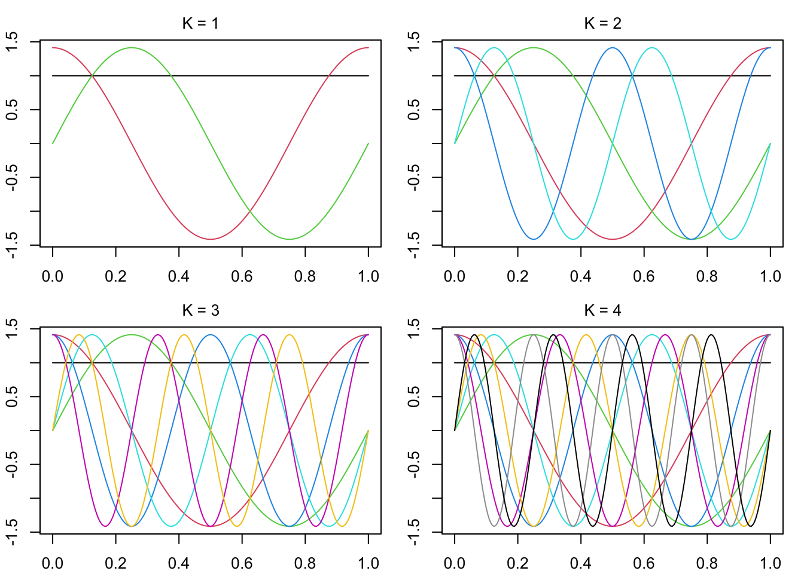

Suppose we observe \(Y_1,\dots,Y_n\) arising as \[
Y_i = m(i/n) + \varepsilon_i, \quad i = 1,\dots,n
\] for some function \(m:[0,1]\to\mathbb{R}\), where \(\varepsilon_1,\dots,\varepsilon_n\) are indepedent \(\mathcal{N}(0,1)\) random variables. We have set the design points \(x_i = i/n\) for \(i=1,\dots,n\) for the sake of later convenience.
The basic idea of nonparametric inference is to use data to infer an unknown quantity while making as few assumptions as possible. Usually, this means using statistical models that are infinite-dimensional.
Following the quotation, we will equate the estimation of \(m\) with that of an infinite-dimensional parameter \(\boldsymbol{\theta}= (\theta_1,\theta_2,\dots)\). First, let \[
L_2([0,1]) = \Big\{g:[0,1]\to \mathbb{R}: \int_0^1 |g(x)|^2dx < \infty\Big\},
\] be the set of square integrable functions on \([0,1]\) and assume \(m \in L_2([0,1])\). our strategy will be to express \(m\) as a weighted sum of an infinite number of basis functions, so that knowing the weights will be the same as knowing the function \(m\). We first define an orthonormal basis for \(L_2([0,1])\).
Definition 7.1 (Orthonormal basis for \(L_2([0,1])\)) Let \(\varphi_1,\varphi_2,\dots~:[0,1]\to \mathbb{R}\) be a collection of functions such that \[
\int_0^1 \varphi_i(x)\varphi_j(x)dx = \left\{\begin{array}{ll}
1& i = j\\
0& i \neq j,
\end{array}\right.
\] for all \(i\) and \(j\) and such that for any function \(g \in L_2([0,1])\)\[
\int_0^1 g(x)\varphi_j(x)dx = 0 \quad \forall j \iff g(x) = 0.
\] Then the functions \(\varphi_1,\varphi_2,\dots\) comprise an orthonormal basis for \(L_2([0,1])\).
Theorem 7.1 (Weights for an orthonormal basis and Parseval’s identity) For \(g \in L_2([0,1])\) we may write \[
g(x) = \sum_{j=1}^\infty \theta_j \varphi_j(x),
\] where \[
\theta_j = \int_0^1 g(x)\varphi_j(x)dx, \quad j = 1,2,\dots
\] Moreover we have \(\int_0^1|g(x)|^2dx = \sum_{j=1}^\infty \theta_j^2\), which is called Parseval’s identity.
For any integer \(N \geq 1\), let \(\boldsymbol{\varphi}_1,\dots,\boldsymbol{\varphi}_N\) be vectors in \(\mathbb{R}^N\) such that \[
\boldsymbol{\varphi}_i^T\boldsymbol{\varphi}_j = \left\{\begin{array}{ll}
1& i = j\\
0& i \neq j,
\end{array}\right.
\] for all \(i\) and \(j\) and such that \(\boldsymbol{\varphi}_j^T\mathbf{g}= 0\) for all \(j\) if and only if \(\mathbf{g}= \mathbf{0}\). Then \(\boldsymbol{\varphi}_1,\dots,\boldsymbol{\varphi}_N\) comprise an orthonormal basis for \(\mathbb{R}^N\). In consequence, for any \(\mathbf{g}\in \mathbb{R}^N\) we have \[
\mathbf{g}= \sum_{j=1}^N (\boldsymbol{\varphi}_j^T\mathbf{g}) \boldsymbol{\varphi}_j,
\] where the right hand side is the orthogonal projection of \(\mathbf{g}\) onto the space spanned by \(\boldsymbol{\varphi}_1,\dots,\boldsymbol{\varphi}_N\). Setting \(\theta_j = \boldsymbol{\varphi}_j^T\mathbf{g}\) allows us to write \(\mathbf{g}= \sum_{j=1}^N \theta_j \boldsymbol{\varphi}_j\). Moreover, we have \(\mathbf{g}^T\mathbf{g}= \sum_{j=1}^N \theta_j^2\). Theorem 7.1 is essentially a limiting version of these same arguments as \(N \to \infty\).
The Fourier basis in Definition 7.2 is such an orthonormal basis.
Definition 7.2 (Fourier basis) The Fourier basis on \([0,1]\) is the collection of functions \(\varphi_1(x) = 1\) and \[\begin{align}
\varphi_{2k}(x) &= \sqrt{2}\cos(2\pi k x) \\
\varphi_{2k+1}(x) &= \sqrt{2}\sin(2\pi k x)
\end{align}\] for \(k=1,2,\dots\)
The panels of Figure 7.1 plot the Fourier basis functions \(\varphi_1,\dots,\varphi_{2K+1}\) for \(K=1,2,3,4\).
Code
plotFourier0to1 <-function(K){ x <-seq(0,1,length =201) Bx <-matrix(0,length(x),2*K+1) Bx[,1] <-1for(j in1:K){ Bx[,2*j] <-sqrt(2)*cos(2*pi*j*x) Bx[,2*j+1] <-sqrt(2)*sin(2*pi*j*x) }plot(NA,ylim =c(-sqrt(2),sqrt(2)),xlim =range(x),xlab ="",ylab ="") xpos <-grconvertX(.5, from ="nfc", to ="user") ypos <-grconvertY(.92, from ="nfc", to ="user")text(x = xpos, y = ypos, labels =paste("K = ",K, sep =""), xpd =NA)for( k in1:(2*K+1)){lines(Bx[,k]~x, col = k) }}par(mfrow =c(2,2),mar=c(2.1,2.1,2.1,1.1))for(k in1:4){plotFourier0to1(K = k)}

Figure 7.1: Fourier basis functions for \(k=1,\dots,K\).
Now, suppose we can write \[
m(x) = \sum_{j=1}^\infty \theta_j \varphi_j(x),
\] where \(\theta_j = \int_0^1m(x)\varphi_j(x)dx\) for \(j=1,2,\dots\), that is, suppose \(m\) lies in the space of functions spanned by \(\varphi_1,\varphi_2,\dots\) Moreover, suppose (we will make this more precise later) that for large enough \(n\) we have \[
m(x) \approx \sum_{j=1}^n \theta_j\varphi_j(x),
\] so that the prominent features of the function \(m\) can be resolved with coefficients \(\theta_j\) corresponding to small indices \(j=1,\dots,n\). In this setup, consider estimating \(\theta_1,\dots,\theta_n\) based on \(Y_1,\dots,Y_n\) with \[
\hat \theta_j = \frac{1}{n}\sum_{i=1}^n Y_i \varphi_j(i/n)
\] for \(j = 1,\dots,n\). Then we have \[
\hat \theta_j = \frac{1}{n}\sum_{i=1}^n m(i/n)\varphi_j(i/n) + \frac{1}{n}\sum_{i=1}^n \varepsilon_i \varphi_j(i/n),
\] where \[
\frac{1}{n}\sum_{i=1}^n m(i/n)\varphi_j(i/n) \to \int_0^1 m(x)\varphi_j(x)dx = \theta_j
\] as \(n \to \infty\) and the second term is Normally distributed with variance such that \[
n\mathbb{V}\Big(\frac{1}{n}\sum_{i=1}^n \varepsilon_i \varphi_j(i/n)\Big) = \frac{\sigma^2}{n}\sum_{i=1}^n\varphi^2_j(i/n) \to \sigma^2 \int_0^1\varphi_j^2(x)dx = \sigma^2
\] as \(n \to \infty\). Thus for large \(n\) we may write \[
\hat \theta_j \overset{d}{\approx} \theta_j + n^{-1/2}\sigma \xi_j,
\] for \(j=1,\dots,n\), where \(\xi_1,\dots,\xi_n\) are independent \(\mathcal{N}(0,1)\) random variables.
This brings us to the so-called Normal means model:
Definition 7.3 (Normal means model) Let \[
Z_i = \theta_i + n^{-1/2}\sigma \xi_i
\] for \(i = 1,\dots,n\), where \(\boldsymbol{\theta}= (\theta_1,\dots,\theta_n) \in \Theta \subset \mathbb{R}^n\) is unknown, \(\xi_1,\dots,\xi_n\) are independent \(\mathcal{N}(0,1)\) random variables, and \(\sigma > 0\).
Due to the reduction of the nonparametric regression model to the Normal means model via the approximations outlined above, what we learn about estimation in the Normal means model can be to some extent carried over to nonparametric regression. That is, studying how well we can estimate \(\theta_1,\theta_2,\dots\) in the Normal means model can help us understand how well we can estimate the unknown function \(m\) in the original nonparametric regression model.
One might imagine that assumptions concerning the smoothness of the unknown function \(m\) will correspond to assumptions about the parameters \(\theta_1,\theta_2,\dots\) This is indeed the case, as we will see in the next section, where we introduce the periodic Sobolev class of functions. These functions can be constructed from the Fourier basis such that the coefficients \(\theta_1,\theta_2,\dots\) will satisfy certain constraints. We will see that for smoother functions, the coefficients \(\theta_1,\theta_2,\dots\) must satisfy stricter constraints, making them “easier” to estimate.
Wasserman, Larry. 2006. All of Nonparametric Statistics. Springer Science & Business Media.